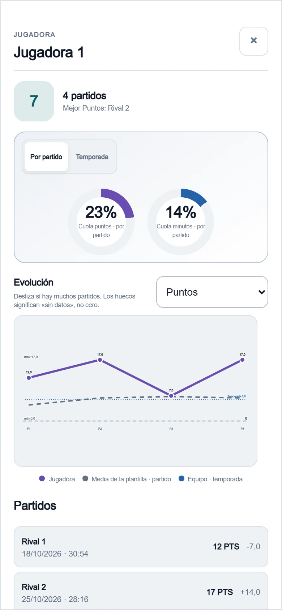

Importa actas FBM
Plantilla, minutos, anotación, valoración y datos del rival desde el Excel del acta.
Importa actas FBM, apunta el Directo y convierte cada partido en información clara para entrenar, comparar y decidir.
La instalación abre la app real. No crea una aplicación distinta para esta página.

Funciones reales de la v12, diseñadas para entenderse en móvil durante la temporada y en el banquillo.
Plantilla, minutos, anotación, valoración y datos del rival desde el Excel del acta.
Robos, pérdidas y rebotes ofensivos por jugadora o jugador, cuarto a cuarto.
Combina rebote ofensivo, robos y pérdidas solo cuando existe registro de Directo.
Totales, por partido, comparar, evolución, cuotas y balances comprensibles.
Ataque y defensa por zonas, partido o temporada, con edición táctil.
Todos los partidos, diferencias legibles, desplazamiento y vista ampliada.
Cambia de equipo sin mezclar plantillas, partidos, Directo ni permisos.
Enlace de Editor para colaborar o Lector para consultar; sin enseñar tokens.
Instalable, rápida y local-first. La nube solo interviene al sincronizar.
Capturas de la v12 real con datos anonimizados para proteger a las personas.

La ausencia no se confunde con cero.

Pérdidas claras y balance con rebote ofensivo.

El primer enlace sube el equipo automáticamente.
Resultados, rachas, marcador y análisis.
Cada equipo tiene su propio espacio. Solo entra quien recibe su enlace, y el propietario puede revocarlo.
Un botón cuando el navegador lo permite; instrucciones mínimas cuando Apple o el navegador exigen un paso manual.